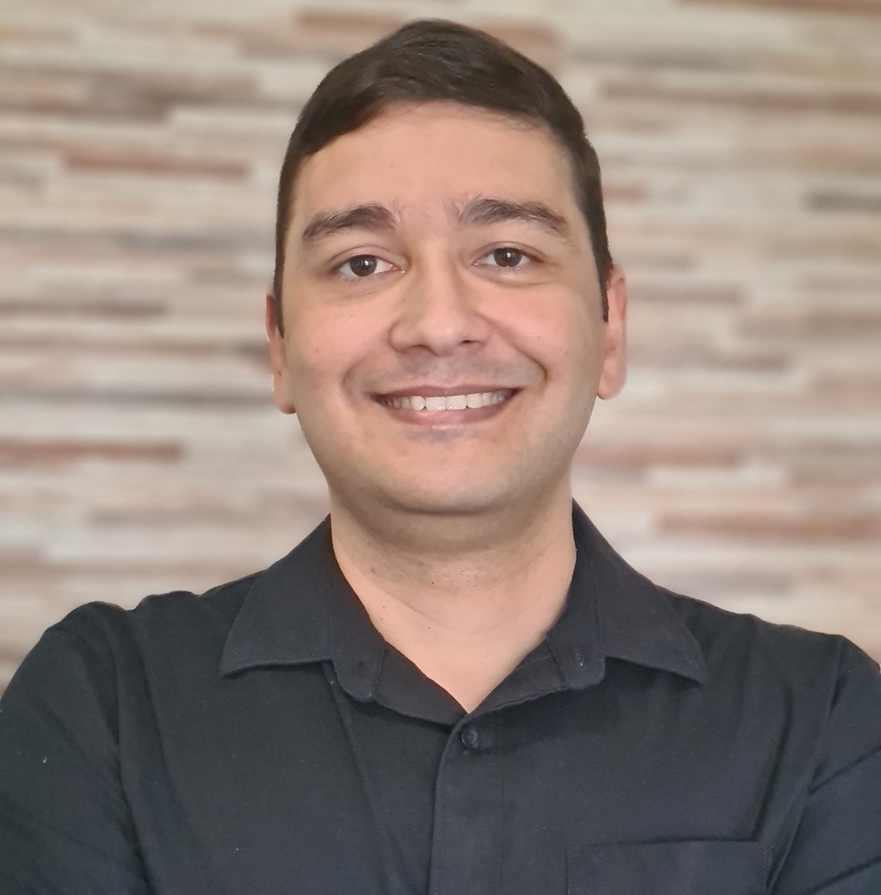

Contato
person_pin_circle
Est. Dr. Manoel Reis - RJ
email
enggabrielsantanna@gmail.com
contact_page
br.linkedin.com/in/gabrielsant
computer
engenheirogabriel.com.br
Principais competências
battery_5_bar
Projetos
battery_4_bar
Manutenção
battery_6_bar
Engenharia Elétrica
battery_1_bar
Desenvolvimento de Sistemas
Idiomas
star
Português
star_half
Inglês
star_half
Espanhol
GABRIEL SANT`ANNA DA SILVA
Engenheiro Eletricista | Engenheiro de Segurança do Trabalho | Desenvolvedor de Softwares
Profissional com carreira desenvolvida na área de Engenharia Elétrica
com expertise em projetos, manutenção de sistemas prediais, implantação, fiscalização e gestão de obras e contratos |
Gestão de projetos elétricos, análise e compatibilização, estimativas, cronogramas, concorrências de empresas e controle orçamentário |
Experiência na utilização de softwares AutoCAD, Revit e Vectorworks | Gestão de indicadores (KPI's) de desempenho
e apresentação de resultados em reuniões de diretoria | Expertise em manutenção corretiva, preventiva e preditiva |
Realização de visitas técnicas, elaboração de desenhos técnicos e detalhes construtivos, memoriais descritivos e quantitativos,
equalização de propostas técnicas e comerciais, comissionamento, medições, emissão de laudos, especificação e aquisição de materiais e serviços |
Acompanhamento do desempenho de fornecedores e contratos, empregando ações corretivas e preventivas em caso de entregas fora da especificação
ou com problemas de qualidade | Elaboração de ações, procedimentos de segurança, padrão NR-10 e demais rotinas da área reunindo itens,
materiais e cálculos necessários para obtenção do resultado final | Acompanhamento da execução da obra, minimizando possíveis desvios,
revisando constantemente processos, procedimentos, padrões e SLA 's em busca de melhoria contínua | Gestão de equipes multidisciplinares
e elaboração de treinamentos, instruções técnicas, manuais e procedimentos de execução e comissionamento.
Pós-graduação em Engenharia de Segurança do Trabalho - Universidade Cruzeiro do Sul - 2022
Pós-graduação em Gestão e gerenciamento de Projetos - Universidade do Estado do RJ - 2018
Bacharelado em Engenharia Elétrica - Universidade Estácio de Sá - 2015
Bacharelado em Engenharia de Produção - SENAI CETIQT - 2013
Ensino Médio Técnico em Eletrotécnica - ETE Visconde de Mauá – 2004
JUSTO ELEVADORES
calendar_month
01/2022 à Atual
Engenheiro Elétrico
Engenheiro responsável Técnico pelos aspectos legais da empresa perante o CREA.
Responsável pela modernizações de elevadores e casas de máquinas adequando-as a ABNT.
Responsável pelo relatório de inspeção anual junto ao GEM da prefeitura do Rio de Janeiro.
Gestão da Frota.
TV GLOBO
calendar_month
08/2007 a 02/2021
Engenheiro Eletricista – 04/2016 a 02/2021
Atuação nas áreas de orçamento, projetos e supervisão de operações e instalações elétricas.
Implementação dos sistemas de engenharia de TV em novos estúdios e cidades cenográficas:
dimmers digitais, protocolos de comunicação, quadros de energia, nobreaks e geradores.
Gestão de projetos elétricos com grande fator de simultaneidade.
Responsável pela função de melhoria contínua: desenvolvimento e viabilização de novos projetos
de redução de custo, melhoria de processos, gerenciando escopo, prazo e orçamento.
Desenvolvimento e implementação de sistemas para jogos em programas ao vivo.
Interface com o fornecedores em projetos de desenvolvimento de produto.
Elaboração de instruções técnicas, manuais e procedimentos de execução e comissionamento.
Gestão de contratos em operações de estúdios, externas e cidades cenográficas.
Técnico de Elétrica – 06/2014 a 04/2016
Planejamento diário de equipes e materiais para as montagens e gravações dos estúdios.
Suporte aos sistemas de televisão em projetos especiais, shows, eventos e gravações.
Coordenação das atividades internas e externas ao site Globo.
Supervisão das equipes terceirizadas no campo, recebimento e distribuição de materiais,
checklist das instalações elétricas nos estúdios, cidades cenográficas e externas, organização e
padronização das Instalações elétricas, termografia em equipamentos e instalações.
Técnico de Iluminação – 10/2010 a 06/2014
Viabilização das necessidades de produção e direção de fotografia.
Definição, concentração e operação de luminárias e equipamentos elétricos.
Manutenção de rotina, inventário, documentação e acompanhamento do cenário, circuitos,
endereçamento e configuração do sistema.
Eletricista de Cenários – 08/2007 a 10/2010